相对于素数判定来说，因子分解的实现就没办法达到那么快速了。因子分解至今仍没有类似于素数判定的多项式算法，这也成为了RSA公钥系统安全得以保障的基础。鉴于这两个问题的难度相差较大，在我们施行分解之前，最好是预先知道目标整数的确不是一个素数，否则很可能花费了很大力气只干了素数判定的活——杀鸡用牛刀了。
因子分解的分为一般方法和特殊方法两大类，通常倾向于先针对数的特殊性（例如）使用特殊方法，如果目标数的形式不那么特殊，再尝试使用一般方法。当然，前者往往要比后者快上许多。
我们这里着重介绍因子分解的一般方法，且总是用 表示待分解的目标数。特殊方法可以以后视实际情况逐渐加入。
表示待分解的目标数。特殊方法可以以后视实际情况逐渐加入。
 试除法
试除法
无论素数判定还是因子分解，试除法(Trial Division)都是首先要进行的步骤。在试除的策略上有两种不同的选择：
- 用足够大的空间来储存试除用的素数因子（储存方法可以相当紧凑，比如用对应的0-1向量表示的大整数）。
- 不耗费大量空间来储存所有需要的素因子，这时需要一个快速生成素数的子程序，或者干脆只用2,3以及型的整数来作为试除因子。
很少发生一个数没有小因子的情况，例如根据Mertens定理[1]，奇数中没有 以下因子的比例可以知道76%的奇数都有小于100的素因子，而没有小于因子的奇数比例仅为6.1%[2]。因此在大多数情况，试除法的第二种选择已经足够，实现却是最为简单的。
以下因子的比例可以知道76%的奇数都有小于100的素因子，而没有小于因子的奇数比例仅为6.1%[2]。因此在大多数情况，试除法的第二种选择已经足够，实现却是最为简单的。
Euclid算法
Euclid算法用于因子分解也非常简单。我们预先计算好小于100的素数之积然后将与目标数进行Euclid算法，最终得到与的最大公因子，继续分解公因子就可以得到在100以下的因子分解了。同样可以预先计算出100到200，200到300的素数乘积,等等。这本质上是试除法的一个实现，当非常大时，必须借助高精度算术来进行除以 的操作，因此频繁的试除会十分耗时，而Euclid方法可以施行很少次数，再在机器精度上完成最终的分解，提高效率。
的操作，因此频繁的试除会十分耗时，而Euclid方法可以施行很少次数，再在机器精度上完成最终的分解，提高效率。
Pollard 方法
Pollard 方法由Pollard于1974年提出，其基本想法是这样的：设素数，由Fermat小定理，又有，因此就可能是的一个非平凡因子。当然，问题在于我们并不知道是多少。一个合理的假设是的因子都很小，比如说，所有素因子都包含在因子基中，我们来尝试着找到一个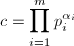能够“覆盖”，即是说，从而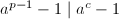，因此我们可以转而求来获得所要的非平凡因子。例如设素因子上限为 ，便可以简单的取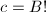或是最小公倍数.
，便可以简单的取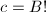或是最小公倍数.
下面给出Pollard 方法的一个版本：
- 设素因子搜索的上限为，生成以下的形如数对应的素数因子之表，即：2,3,2,5,7,2,3,11,13,2...
- 随机选择正整数
 ，顺次计算
，顺次计算
- 定期检查（例如每当
 为20的倍数时）
为20的倍数时） ，若1$" class="latex-inline" style="vertical-align: -5px" width="108" height="18">，则得到一个的因子；否则继续第2步中的递推计算。
，若1$" class="latex-inline" style="vertical-align: -5px" width="108" height="18">，则得到一个的因子；否则继续第2步中的递推计算。
的幂次，乘法群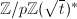( 为的二次非剩余)代替了乘法群。因此Pollard 方法与Williams 方法的关系就好像素数检测中的Lehmer
为的二次非剩余)代替了乘法群。因此Pollard 方法与Williams 方法的关系就好像素数检测中的Lehmer  检测与Lucas
检测与Lucas  检测的关系一样。具体可参看[3].
检测的关系一样。具体可参看[3].
Pollard  方法
方法
目前几乎所有实用的分解方法都是概率性的算法，目标是找到能计算的算法，使得1$" class="latex-inline" style="vertical-align: -5px" width="73" height="18">的概率较大(而最大公因子可以很快地计算)。上面的Pollard 就是一例，下面即将看到的Pollard 方法也不例外。
Pollard 方法由Pollard在1975年提出，它来自一个有趣的事实：随机选取大约个整数（ 为一个常数），就有很大概率在这些整数中找到两个是同余的。实践中可以采用同余递推序列来产生伪随机数，其中
为一个常数），就有很大概率在这些整数中找到两个是同余的。实践中可以采用同余递推序列来产生伪随机数，其中 为映射：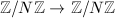。设是的一个因子，且找到，则计算便可能得到的一个非平凡因子。
为映射：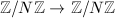。设是的一个因子，且找到，则计算便可能得到的一个非平凡因子。
| 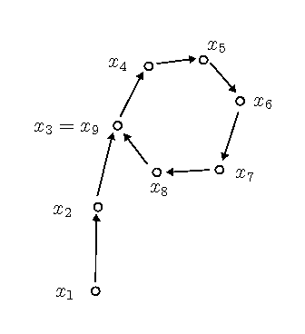 |
| Pollard $\rho$ 方法 |
由 的有限性，如上定义的一阶的递推序列在意义下必定是最终循环的(如图，看上去就像希腊字母）。设其开头的非循环部分长度为
的有限性，如上定义的一阶的递推序列在意义下必定是最终循环的(如图，看上去就像希腊字母）。设其开头的非循环部分长度为 ，循环节长度为。著名的Floyd算法可以在步内高效地找出序列中的两个重复元素，并且只用常数的储存空间。
，循环节长度为。著名的Floyd算法可以在步内高效地找出序列中的两个重复元素，并且只用常数的储存空间。
 满足且。由于等价于，因此取为中的倍数即可。算法过程中不必保存所有，可以存下当前的并递推计算，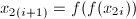。
□
满足且。由于等价于，因此取为中的倍数即可。算法过程中不必保存所有，可以存下当前的并递推计算，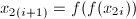。
□
实践中常采用的为选择二次的递推序列一方面能提供足够的随机性，另一方面计算起来也非常简便。
 。
。 或干脆改变方法的一个改进，在分解整数时，该方法平均能够加速24%。这个改进是针对Floyd的算法2的，因为Floyd算法中，往往要重复计算等，Brent有如下改进，无需重复计算，但仍能同样有效的找出重复元素，并且只要常数的储存空间。
或干脆改变方法的一个改进，在分解整数时，该方法平均能够加速24%。这个改进是针对Floyd的算法2的，因为Floyd算法中，往往要重复计算等，Brent有如下改进，无需重复计算，但仍能同样有效的找出重复元素，并且只要常数的储存空间。
 ，若，则算法终止。
，若，则算法终止。 为2的幂，即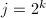，令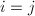, 依次令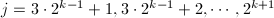，判断是否有，若相等则算法终止。
为2的幂，即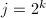，令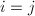, 依次令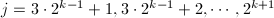，判断是否有，若相等则算法终止。
平方型分解(SQUFOF)
平方型分解(SQUare FOrm Factorization)是由Shanks在大约三十前发展的算法，但他从来没有正式发表过[6]。尽管SQUFOF复杂度为 也是一个指数级的算法（而下面介绍的CFRAC, ECM, QS等都是次指数级的），但其仍有自身的优势：一方面算法十分简洁优美、便于实现（甚至可以在袖珍计算器上实现），并且在到范围的整数分解仍然是最快的。
也是一个指数级的算法（而下面介绍的CFRAC, ECM, QS等都是次指数级的），但其仍有自身的优势：一方面算法十分简洁优美、便于实现（甚至可以在袖珍计算器上实现），并且在到范围的整数分解仍然是最快的。
SQUFOF依赖于对二次域结构的分析，我们在这里仅给出算法的描述，略去证明，具体可参见[6]：
非平方数，非素数，一下算法输出的一个非平凡因子。
- 设，，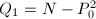。
- 顺次计算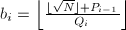，，，直到为完全平方数。(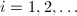)
- 计算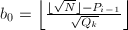，，，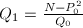。
- 重复第二步中的计算，直到，输出。
连分式方法(CFRAC)
连分式方法(Continued FRACtion)是由Morrison和Brillhart于1975年提出的[7]，他们运用此方法成功地分解了Fermat数。它以及之后要介绍的二次筛(QS)以及数域筛(NFS)都基于如下一个简单的事实：如果则就是的一个非平凡因子。
当然，寻找这样的不能只靠运气，CFRAC方法构造一组同余式
其中 都是因子基中较小的素数。如果找到足够多这样的同余式(例如个数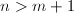m+1$" class="latex-inline" style="vertical-align: -2px" width="74" height="13">)，那么利用二元域
都是因子基中较小的素数。如果找到足够多这样的同余式(例如个数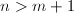m+1$" class="latex-inline" style="vertical-align: -2px" width="74" height="13">)，那么利用二元域 上的Gauss消元法，可以找到组合系数使得我们记此时若令
便则有我们所需要的
上的Gauss消元法，可以找到组合系数使得我们记此时若令
便则有我们所需要的
如何构造这么多同余式呢？我们知道用连分式部分展式可以得到二次无理数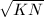( )的好的有理数逼近。设为其近似分数，那么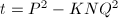的绝对值就很小，从而很可能在因子基下分解，同时
)的好的有理数逼近。设为其近似分数，那么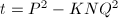的绝对值就很小，从而很可能在因子基下分解，同时 ，便能得到我们所期望的同余式(1)。
，便能得到我们所期望的同余式(1)。
- 选择适当的（通常取为1，当连分式展式周期太小而无法产生足够的同余式时选择另一个
 ），令，使得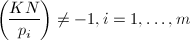。
），令，使得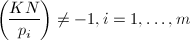。 - 计算的连分式展式，得到一系列近似分式。
- 计算，尝试在下得到
 的分解，若分解成功则有
的分解，若分解成功则有 - 当得到足够多的同余式时（m+1$" class="latex-inline" style="vertical-align: -2px" width="74" height="13">即可），用上的Gauss消元法得到(2)中的。
- 若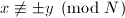，输出的非平凡因子。
 记号如下定义：
记号如下定义：
Lenstra椭圆曲线方法(ECM)
因子分解说到底就是寻找，使得非平凡，关键在于提高寻找的的成功率。Pollard 方法通过计算来提高成功率，实质上是在群中考虑问题。椭圆曲线方法(Elliptic Curve Method)转而在有限域上随机的椭圆曲线群中考虑问题。由于椭圆曲线可以有许多不同的选择，ECM方法要比Pollard 高效许多，到目前为止是第三快的因子分解方法，仅次于数域筛和二次筛。
首先我们给出域上椭圆曲线的定义：
 上的椭圆曲线)
上的椭圆曲线) 表示无穷远点，则称为
表示无穷远点，则称为椭圆曲线既是代数曲线又是一个加法群：
 关于
关于| 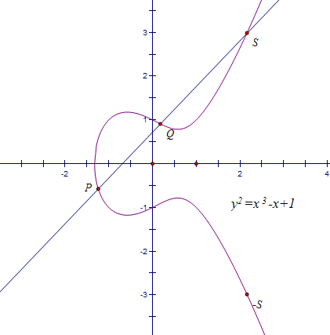 |
| 椭圆曲线 |
由定义通过简单的计算我们可以得到：
上面我们考虑了域上的椭圆曲线，然而对于因子分解的任务来说，我们需要考虑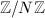上的椭圆曲线。由于等在中未必可逆，此时上面的加法运算未必能定义好，不过这无关紧要，例如当不可逆时，我们已经可以通过计算来得到的非平凡因子，从而直接完成分解的目标；而当可逆时，一切可以正常按照上面的显式表达进行运算。因此在这里我们不再花功夫用严格的语言来定义上的椭圆曲线了。
下面我们将Pollard 中类似的想法用在椭圆曲线中。
Pollard 方法的实质就是期望整数足够光滑而能在因子基下分解。和Pollard 方法中的想法类似，ECM中首先从椭圆曲线 中随机取一点，我们期望的阶是足够光滑的，从而可以在下分解，然后通过加法规则计算（当然我们预先并不知道），利用计算过程中出现的不可逆元，求得的一个因子。
中随机取一点，我们期望的阶是足够光滑的，从而可以在下分解，然后通过加法规则计算（当然我们预先并不知道），利用计算过程中出现的不可逆元，求得的一个因子。
为给定的搜索极限，为以下的所有素数。
- 随机选取整数，为曲线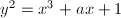。
- 设，
 ，根据式(3)递推地计算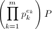。若计算过程中出现不可逆元，则到第三步，否则到第一步。
，根据式(3)递推地计算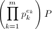。若计算过程中出现不可逆元，则到第三步，否则到第一步。 - 计算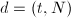。如果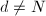则输出
 ，算法终止；如果则到第一步。
，算法终止；如果则到第一步。
下面我们谈一下搜索极限的取法，和Pollard 方法中一样，我们需要知道有限域上群的阶，下面有限域上椭圆曲线最主要的定理归功于Hasse，告诉我们群的阶在左右[9]：
下面的定理则给出了关于光滑性的一个估计[9]：
由上面两个定理我们可以得到选取的一些信息，设素数，而，由定理1和2知道平均要试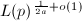条曲线可以得到一个阶为-光滑的椭圆曲线，算法7计算总共需要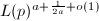个群运算，为使运算量最小，因此可取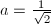。实践中的选择依赖于时间的承受限度，例如我们将搜索的素数因子限制在以下，那么可取（接近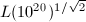）。
由上面的讨论可以看出，ECM的时间复杂度依赖于的最小素因子而非本身（为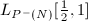），因此很适宜在试除法和Pollard 方法之后用ECM来找出较小的因子（10-20个十进制位左右）。
ECM算法的效率很大程度取决于群运算的快慢，最关键的是模的求逆运算。我们在本节最后给出Montgomery的一个加速算法，使得我们能够同时对多条椭圆曲线进行求逆运算。
整除的整数，本算法求出其逆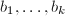或给出的一个非平凡因子。
- 递推计算
- 施行一次扩展Euclid算法求出
 满足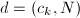，
满足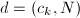， 。
。
- 若
 ，则
，则 均有逆，到第三步；
均有逆，到第三步； - 若1$" class="latex-inline" style="vertical-align: -1px" width="38" height="13">，依次计算
 直到1$" class="latex-inline" style="vertical-align: -5px" width="71" height="18">，输出为的一个非平凡因子。
直到1$" class="latex-inline" style="vertical-align: -5px" width="71" height="18">，输出为的一个非平凡因子。
- 若
- 递推计算逆并输出：
二次筛法(QS)
二次筛法(Quadratic Seive)是由Pomerance于1981年提出的，直到1993年是世界上渐进最快的通用大整数因子分解方法，第一的位置后来被数域筛所取代，不过对于120位以下的整数，二次筛还是要比数域筛快一些。
单个多项式二次筛法(SPQS)
正如我们在CFRAC方法中提到的，QS方法也要构造一组同余式(1)，但通过筛法避免了其中 在因子基下的分解，而这种分解在不存在的情况下常常会大量消耗时间。设，若，则不难验证对于任意
在因子基下的分解，而这种分解在不存在的情况下常常会大量消耗时间。设，若，则不难验证对于任意 ，也有。于是我们找到了一系列数都有因子，这样一个事实构成了QS方法的基础。
，也有。于是我们找到了一系列数都有因子，这样一个事实构成了QS方法的基础。
我们取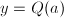，为了使其与某个模同余，且尽可能小以便在下分解，考虑二次多项式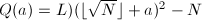，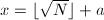，则且为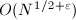的阶，符合我们的要求。接下来是筛法的过程：对于中满足搜索极限p^e$" class="latex-inline" style="vertical-align: -4px" width="50" height="16">的素数及幂次 ，首先求解方程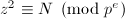，其解数（如果有解的话）
并且解都可以快速地求得。对方程的任一个解
，首先求解方程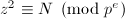，其解数（如果有解的话）
并且解都可以快速地求得。对方程的任一个解 ,令，则有。给定一个搜索区间
,令，则有。给定一个搜索区间 （通常很长），则对任意与
（通常很长），则对任意与 差的整数倍的，都有因子。可用一张表储存区间中每个整数对应的因子，当对所有与进行如上过程后，通过检查表，即可得到许多中在下完全分解的整数了。接下来的步骤则与CFRAC的后半部分完全相同。
差的整数倍的，都有因子。可用一张表储存区间中每个整数对应的因子，当对所有与进行如上过程后，通过检查表，即可得到许多中在下完全分解的整数了。接下来的步骤则与CFRAC的后半部分完全相同。
![$L_N[\frac{1}{2}, 1]$](latex/latex2png-IntegerFactorization_102378170_-6.gif) ，与ECM差不多。但由于筛法的运用，QS的运算更简单一些，实践中要快于ECM，除非是在较小的情形。
，与ECM差不多。但由于筛法的运用，QS的运算更简单一些，实践中要快于ECM，除非是在较小的情形。
多个多项式二次筛法(MPQS)
MPQS是对上述只用一个二次多项式的SPQS方法的一个改进，使用更多的二次多项式来减小的值，从而减小的大小和搜索区间的长度。考虑形式的多项式(0$" class="latex-inline" style="vertical-align: -1px" width="43" height="13">)，配方得，因此可选取系数使，设，则。我们需要尽可能的小，设搜索区间的长度，自然的把的中心设置在的极小点处，此时且在上的最大值与最小值之差为从而宜取，且 接近。因此选择系数的过程可以如下进行
接近。因此选择系数的过程可以如下进行
- 选择区间长度
 。
。 - 选择接近于的素数。
- 求解(例如利用Shanks算法3)。
- 令。
接下来的步骤便是对这样选取的多个多项式进行筛法，最终得到足够多的同余式进行上的Gauss消元法。
数域筛法(NFS)
数域筛法(Number Field Sieve)是目前渐进最快的通用因子分解方法，其时间复杂度为，其中常数依赖于不同的算法实现。例如对于针对形式整数的特殊数域筛法(SNFS)有，而对于一般数域筛法(GNFS)有 。对于120位以上的大数，NFS是最强有力的分解算法。例如互联网上的分布式大整数分解项目NFSNet采用的便是此法。
。对于120位以上的大数，NFS是最强有力的分解算法。例如互联网上的分布式大整数分解项目NFSNet采用的便是此法。
参考文献
[1]素数论, 清华大学出版社, 北京, 2007.
[2]Prime Numbers and Computer Methods for Factorization, Boston; Basel; Stuttgart: Birkhäuser, 1985.
[3]A $p+1$ Method of Factoring, Mathematics of Computation 39 (1982), no.159, 225-234.
[4]Modern Computer Algebra, Cambridge University Press, 2002.
[5]An improved Monte Carlo factorization algorithm, BIT Numerical Mathematics 20 (1980), no.2, 176--194.
[6]Square form factorization, Mathematics of computation 77 (2008), no.261, 551-588.
[7]A Method of Factoring and the Factorization of $F_7$, Mathematics of Computation 29 (1975), no.129, 183-205.
[8]Asymptotically Fast Factorization of Integers, Mathematics of Computation 36 (1981), no.153, 255-260.
[9]A Course in Computational Algebraic Number Theory, Springer Verlag, 1993.